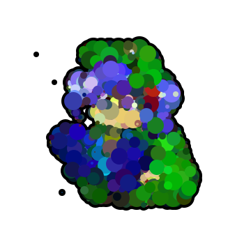

self portrait (自画像)

I've used it as a Twitter icon for a long time, so I think it's okay to call it a self-portrait.
東方風神録のにとりちゃんっぽいアイコンです。ながいことTwitterのアイコンとして使ってきたので自画像と言っても差し支えないと思います。
OpenSea
This is my Twitter icon.
実際にTwitterで使われているアイコン
Twitter
back